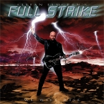

|
|
||
Stefan Elmgren's Full Strike : We Will Rise (2002) |
|

http://www.fullstrike.net |
1. End Of Time 3:54 |
8.2/10 |
|
Full Strike es la banda que el guitarrista de solos de Hammerfall, Stefan Elmgren, ha fundado en paralelo a este grupo. Stefan nunca ha tenido protagonismo en la composición de los temas de Hammerfall, y seguramente ha decido iniciar este proyecto para poder dar rienda suelta a su faceta más creadora. Junto al cantante Niclas Johnsson, el bajista Chris Goldsmith y el batería Björn Fryklund, Stefan Elmgren ha formado una banda de heavy metal bastante clásico, y claramente influenciado por el estilo de Hammerfall. We Will Rise es un disco sólido, con un nivel de calidad bastante uniforme, que mezcla razonablemente bien temas duros con canciones más melódicas. La voz de Niclas Johnsson es clara y lo bastante potente para este álbum y lo cierto es que se parce bastante a la de Joacim Cans, el cantante de Hammerfall. A pesar de que Stefan es un guitarrista de solos, los solos de este álbum no son demasiado largos, y tampoco especialmente destacables. Donde quizás se nota más la habilidad como guitarrista de Stefan es en la parte rítmica de las canciones, que mezcla con acierto lineas melódicas y rítmicas de guitarra, aportando mayor profundidad y complejidad a la música, al estilo de las bandas con buenas parejas de guitarristas, como por ejemplo Iron Maiden. "End of Time" es un tema rápido, con cambios de ritmo, un estribillo que destaca y recuerda muchísimo a Hammerfall. La segunda canción, "Enlighten me", es un tema de ritmo marcado, pero más lento que la anterior, y melodioso, sobre todo en el estribillo. "We Will Rise", título que da nombre al disco, recupera los cambios de ritmo, y de atmósfera. El coro del estribillo es uno de los puntos más destacables de todo el álbum. "Metal Mind" es otro de los temas potentes, a doble bombo y volando sobre algunos contundentes riffs de guitarra. "Silent Screams" es una balada, donde destacan la vibrante voz de Niclas Johnsson, y el cargado de emoción, aunque corto, solo de guitarra. Los dos temas siguientes, "Master of my Soul" y "Mandrake's Dream" son algo más oscuros que el resto del álbum. "When Will I Know" ofrece más velocidad y un ritmo pulsante. La novena pista es una instrumental, "First Strike", de sonido bastante clásico y que resulta bien ejecutada. "Created Fantasy" recupera el doble bombo, los cambios de ritmo, y el sonido algo más oscuro. Cierra el disco "Force of the World", un tema de ritmo "galopante" (por cierto, bastante usado a lo largo del álbum), que permite a Niclas llevar su voz a registros bastante altos, y que tiene un destacable y melodioso estribillo a coro. |
||
Rubén Béjar |
||